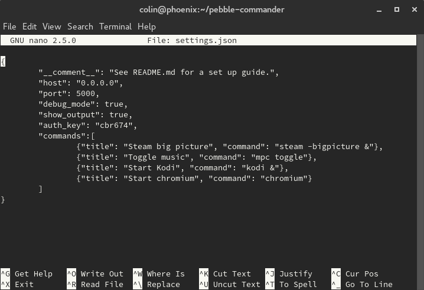

A note
This is a rough guide on how to install Commander for Pebble. It will walk you through the installation and configuration of the server, plus setting up the app.
Installation
Requirements:
- A python 2 installation. Your linux distro most likely already has this (or it could even be installed.)
- Git
- Python
pipfor installing programs - Flask
- Some time
Installing the required modules
- Package manager install You have 2 options for this. Option #1 is to install flask with your distro’s package manager. If this is what you want to do, install the python 2 version of Flask. When done, continue to the next step.
- Pip method: This method will work if you don’t want to use your distro’s packaged version of Flask. To install flask with pip, gain a root shell and type
pip install flask. If you don’t want to have flask system-wide, dopip --user install flask
Setting up the server
Run these commands:
git clone https://github.com/c0decat/pebble-commander.git
cd pebble-commander
nano settings.json
In settings.json, you are able to configure the server.

Explanation of the config-file
The config file is plain JSON. You shouldn’t have any problem setting this up if you have used JSON before. If not, basically if you use commas correctly, you’ll be fine.
host: The IP the server will run on. Leave this as-is.port: The port you want the server to run on.debug_mode: Debug mode is for testing the server code. You might want to disable this.show_output: Shows the command output when you run a command from the app. This can also be set in the pebble app but it’s overriden here.auth_key: The password you use to access the server. This adds a security safeguard to stop unauthorized use of the server.commands: A list of commands that you can execute from your Pebble™.
Once you are done configuring the server, run python2 server.py and go to http://localhost:5000. You should get a welcome page. If you get it all is good on the server side.